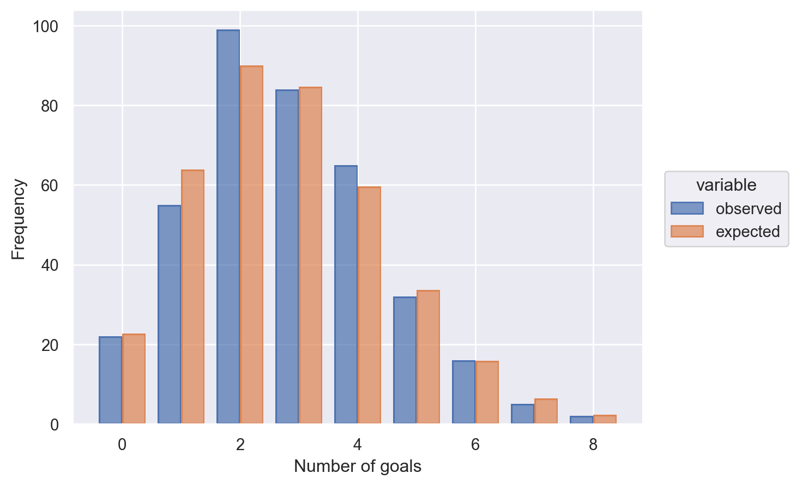

Can Goals Scored In The English Premier Be Modelled By A Poisson Process?
Work in progress
Dependencies
We load the dependencies first so they are accessible throughout the entire notebook.
Summary
Introduction
Data Pipeline
Cache and load the CSV file into a pandas DataFrame.
url = 'https://raw.githubusercontent.com/ljk233/laughingrook-datasets/main/epl_goals/epl_1819.csv' # noqa
epl_goals_df = pd.read_csv(url, usecols=[14, 18, 19])
epl_goals_df.info()<class 'pandas.core.frame.DataFrame'>
RangeIndex: 380 entries, 0 to 379
Data columns (total 3 columns):
# Column Non-Null Count Dtype
--- ------ -------------- -----
0 total_goal_count 380 non-null int64
1 home_team_goal_timings 292 non-null object
2 away_team_goal_timings 261 non-null object
dtypes: int64(1), object(2)
memory usage: 9.0+ KB| total_goal_count | home_team_goal_timings | away_team_goal_timings | |
|---|---|---|---|
| 0 | 3 | 3,83 | 90'2 |
| 1 | 3 | 11 | 8,18 |
| 2 | 2 | 24,90'1 | NaN |
| 3 | 2 | NaN | 41,79 |
| 4 | 3 | NaN | 34,45,80 |
Clean the goal timings
Each line represents the results of a single game, with the goal times stored as a comma-separated str. However, there are a number of issues with this, which this pipeline will fix.
Lines #3 to #6unpivots the data- The goal timings are stored in two columns, but ultimately they will be subjected to the same transformation
- By unpivoting the data, we only need to transform a single column
Line #7resets the index and stores it in a column called game_id- There is a natural ordering to the data, which cannot be inferred once we start transforming it
- By preserving the index, we can the infer this natural ordering later on
Lines #8 to #11processes the goal timings columnLine #8splits the goal timings value, so each row is cast to alistLine #9explodes the goal timings, so rather than each row holding data on multiple goals, now each row represents the time of an individual goal (as astr)Lines #10 to #11then casts the goal timings to anint, with a side-effect being that we drop any goals scored in injury time
Lines #12 to #16then finish the transformationLine #12sorts the date by game id > game timeLine #13resets the indexLine #14resets the index, and renames it to goal_idLine #15renames columns to something more sensibleLine #16drops columns that are not needed in the future
This will be stored in a new view called goal_timings_df.
goal_timings_df = (
epl_goals_df
.melt(value_vars=['home_team_goal_timings',
'away_team_goal_timings'],
ignore_index=False,)
.dropna()
.reset_index().rename(columns={'index': 'game_id'})
.assign(value=lambda x: x['value'].str.split(','))
.explode(column='value', ignore_index=False)
.assign(value=lambda x: pd.to_numeric(x['value'], errors='coerce'))
.dropna().assign(value=lambda x: x['value'].astype(int))
.sort_values(by=['game_id', 'value'])
.reset_index(drop=True)
.rename_axis('goal_id').reset_index()
.rename(columns={'value': 'game_min'})
.drop(columns=['variable'])
)
goal_timings_df.info()<class 'pandas.core.frame.DataFrame'>
RangeIndex: 978 entries, 0 to 977
Data columns (total 3 columns):
# Column Non-Null Count Dtype
--- ------ -------------- -----
0 goal_id 978 non-null int64
1 game_id 978 non-null int64
2 game_min 978 non-null int32
dtypes: int32(1), int64(2)
memory usage: 19.2 KBSeason goal timings
We will model the EPL season as if no games were played at the same time, instead as if they were played consecutively. We do this by shifting each game_min by 90 \(\times\) goal_id. This representation is then stored in season_min.
We will hold this data in a new view called season_goal_timing_df.
Waiting time between goals
The calculate the time between each concecutive goals, and store this in a DataFrame called waiting_time_between_goals_df.
waiting_time_between_goals_df = (
season_goal_timings_df
.assign(waiting_time=lambda x: x['season_min'].diff())
.dropna()
.assign(waiting_time=lambda x: x['waiting_time'].astype('int'))
.drop(columns='season_min')
)
waiting_time_between_goals_df.head()| goal_id | game_id | waiting_time | |
|---|---|---|---|
| 1 | 1 | 0 | 80 |
| 2 | 2 | 1 | 15 |
| 3 | 3 | 1 | 3 |
| 4 | 4 | 1 | 7 |
| 5 | 5 | 2 | 96 |
Analysis
Number of goals per game
If goal scoring can be modelled by a Poisson process, then we would expect the number of goals per game to be distributed by a Poisson distribution with parameter \(\Bbb {E} (\text{number of goals per game})\).
There were on average approximately 2.8 goals per game, with variance approximately 2.5642. These are quite close, so there is evidence that the number of goals per game maybe modelled by a Poisson distribution with parameter approximately 2.8.
(2.8210526315789473, 2.5641994167476736)The plot below shows the observed frequency of each goal count, and the expected frquency if the number of goals per game could be modelled by a Poisson distribution.
n_games = epl_goals_df.shape[0]
goal_rate = epl_goals_df[['total_goal_count']].mean()
num_goals_model = st.poisson(goal_rate)
num_goals_per_game_df = (
epl_goals_df['total_goal_count']
.value_counts().rename_axis('num_goals').rename('observed')
.reset_index()
.assign(expected=lambda x: num_goals_model.pmf(x['num_goals']) * n_games)
.sort_values(by='num_goals')
)
(
so.Plot(data=num_goals_per_game_df.melt(id_vars='num_goals'),
x='num_goals',
y='value',
color='variable')
.add(so.Bar(), so.Dodge())
.label(x='Number of goals',
y='Frequency')
)